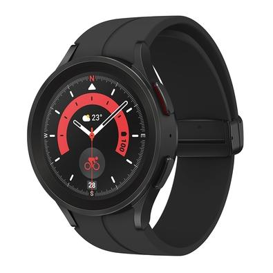

Samsung Watch 5 Pro:
Descrição:

Smartwatch Samsung Galaxy Watch 5 Pro 45mm Tela de 1.4 pol. Conectividade Wi-Fi e Bluetooth 5.2 Classificação 5 Atm Resistência à Água Notificações Inteligentes - No Brasil
Design Sofisticado: O Samsung Galaxy Watch 5 Pro se destaca pelo seu design elegante e robusto em Titanium Cinza, complementado por uma vibrante tela de 1.4", proporcionando uma experiência visual agradável;
Funcionalidades Avançadas: Este smartwatch vem equipado com uma série de funcionalidades que aumentam sua produtividade, incluindo notificações de chamadas, mensagens, e-mails e atualizações de aplicativos;
Conectividade Superior: Com suporte para Wi-Fi e Bluetooth, o Galaxy Watch 5 Pro mantém você sempre conectado, permitindo que você receba notificações e atualizações mesmo sem o seu smartphone por perto;
Autonomia Impressionante: Com uma bateria de longa duração, este relógio permite que você desfrute de suas funcionalidades ao longo do dia, sem necessidade de recarregamento frequente;
Durabilidade: O Galaxy Watch 5 Pro foi projetado para acompanhar seu ritmo de vida, apresentando resistência à água e ao pó, o que garante sua durabilidade para as atividades do dia a dia. Garantia 90 dias
Garantia do vendedor: 90 dias